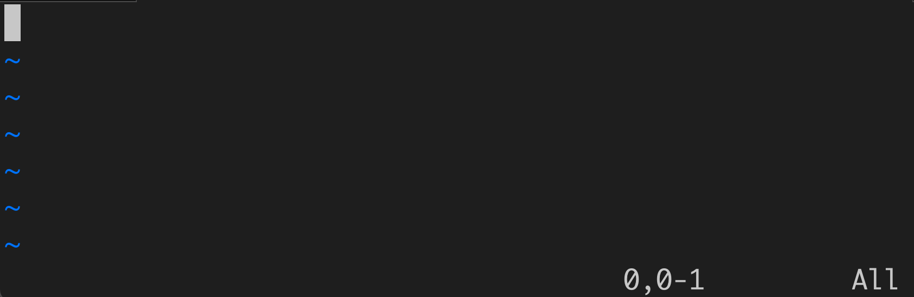
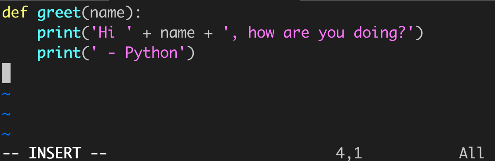
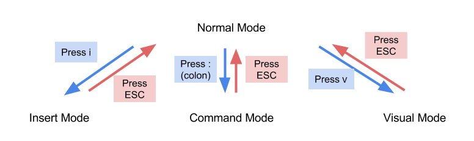

Vim
简介
Vim 是一款以丰富的键盘快捷键和多种编辑模式而闻名的文本编辑器。Vim 具有很高的可定制性，互联网上有许多插件可以让你扩展 Vim 的功能。
本指南将带你了解使用 Vim 的基础知识，但这只是冰山一角——如果你喜欢 Vim，还有很多很棒的东西值得学习！
话虽如此，Vim 需要一些时间来适应。很有可能，你一开始会感到不止一次的沮丧。如果你决定暂时使用其他文本编辑器，欢迎以后再尝试 Vim。
目标
阅读本指南后，你应该能够做到以下几点：
- 使用 Vim 的普通模式、插入模式和命令模式
- 打开和编辑文件
- 保存文件
- 退出 Vim（不像你想象的那么简单）
- 使用一些基本的 Vim 命令
在你的电脑上安装 Vim
你可以根据自己的电脑类型安装 Vim：
- Mac：Mac 预装了 Vim。你只需要打开终端并输入
vim！你也可以尝试 MacVim，这是 Mac 的图形化（非终端）版本 Vim。 Ubuntu：你可以通过打开终端并输入以下内容来安装 Vim：
sudo apt-get install vim这将安装终端版本的 Vim。你也可以通过以下命令安装 GVim（Vim 的图形化版本）：
sudo apt-get install vim-gtk要启动 GVim，请在终端中输入
gvim。- Windows：你可以在这里找到 Vim 的下载链接。此安装包括 Vim 的图形化版本以及终端版本。
如果你使用其他类型的电脑，可以查看 Vim 网站。
注意：本指南使用终端版 Vim。图形化 Vim 的说明可能略有不同。
示例：greet.py
由于我们使用的是终端版本的 Vim，所以我们需要一个终端！ 去打开一个终端吧。
首先让我们使用你在 实验0 中学到的 UNIX 命令创建并进入一个名为 example 的目录：
mkdir ~/example
cd ~/example打开文件
使用 Vim 打开文件非常简单，只需输入以下命令：
vim greet.py这里，greet.py 是我们要编辑的文件名。由于
greet.py 不存在，Vim 将为我们创建该文件。如果我们
已经有一个名为 greet.py 的文件，Vim 将打开现有的
文件。
注意：你也可以不指定特定文件而直接启动 Vim，只需输入
vim
你的终端现在应该看起来像这样：

不要担心波浪号（
~）——它们只表示那些行没有 文本。另外，如果你看到一些文本（"VIM - Vi IMproved"），也不要担心——一旦我们开始输入，这些文本就会 消失。
普通模式和插入模式
如果你现在尝试输入任何内容，你输入的字符不会 出现在屏幕上（事实上，取决于你按了什么，可能会发生各种各样的事情）。这是怎么回事？
在大多数文本编辑器（如 Microsoft Word）中，你输入的所有内容 都会显示在屏幕上（例如，如果你输入 "See spot run"，Word 会显示 "See spot run"）。
Vim 有不同的模式，每种模式允许你做不同的 事情。普通模式允许你使用键盘快捷键进行 导航、文件操作等。讽刺的是，它 不允许你正常输入。
注意：每次打开 Vim 时，你都会从普通模式开始。
Vim 还有插入模式，它允许你像使用 常规文本编辑器一样使用 Vim——你按下按键，相应的字符 就会显示在屏幕上。
要进入插入模式，请按字母 i（表示插入）。在终端的
底部，你应该看到显示 -- INSERT -- 的文本。这
告诉我们现在处于插入模式！尝试输入一些内容以验证
你按下的按键是否显示出来。
要返回普通模式（我们为什么要这样做？我们稍后会
看到），请按 ESC 键。-- INSERT -- 标签应该会消失。
小结：从普通模式，你可以通过按
i进入插入模式。从插入模式，你可以通过按ESC进入普通模式。
编辑文件
让我们进入插入模式并开始编写我们的第一个 Python 文件
（记得查看底部是否有 -- INSERT -- 标签）。在这一点上，
我们并不期望你已经了解 Python——没关系！你只需要
输入以下内容：
def greet(name):
print('Hi ' + name + ', how are you doing?')
print(' - Python')提示：你会注意到 Vim 的光标是一个块，而不是一条 线。这可能会导致对 Vim 将在何处放置你输入的下一个 字符产生困惑。Vim 将紧挨着光标之前开始输入。 例如，如果你的文本是：
def greet并且光标在字母
g上，那么 Vim 将紧挨着g之前开始输入。
输入完成后，Vim 应该看起来像这样：

保存文件
现在我们已经完成了编辑，我们应该保存文件。要保存文件，我们 需要介绍第三种 Vim 模式，称为命令模式。
- 进入普通模式（如果你处于插入模式，请按
ESC）。 - 输入冒号（
:键）。确保它不是分号（;）
你现在应该看到冒号出现在终端的左下角—— 这告诉我们处于命令模式！
要保存文件，请输入字母 w 然后按 Enter。你应该
看到 w 出现在冒号旁边（确保它不是大写的
W）。一旦你按了 Enter，文件就会被保存。
这看起来只是为了保存文件就需要很多步骤，但在练习几次后，保存文件将（真的）只需要 一秒钟。以下是完整的步骤：
- 进入普通模式（按
ESC）- 进入命令模式（按
:）- 按
w- 按
Enter
运行 Python
在本课程中，你将在文本编辑器（Vim）和 Python 之间频繁切换——编写代码和测试代码。通常很有用 打开两个终端：一个用于 Vim，另一个用于一般用途 （如运行 Python）。
去打开另一个终端（先不要关闭 Vim）。将
目录更改到包含我们的 greet.py
文件的 example 目录：
cd ~/example让我们玩一下我们的代码。在新终端中，首先输入
python3 -i greet.py此命令的作用如下：
python3是启动 Python 的命令-i标志告诉 Python 以交互模式启动，这 允许你从终端输入 Python 命令greet.py是我们要加载的 Python 文件名
注意 Python 解释器显示 >>>。这意味着 Python
准备好接收命令了。
回想一下我们定义了一个名为 greet 的函数。让我们看看它
做了什么！输入以下内容：
greet('Albert')Python 将打印出
Hi Albert, how are you doing?
- Python你可能希望 Python 问候你而不是我。所以如果你的名字是 John，你也应该输入：
greet('John')Python 将打印
Hi John, how are you doing?
- Python我们的代码有效！让我们通过输入以下内容来关闭 Python
exit()有几种方法可以退出 Python。你可以输入
exit()或quit()。在 MacOS 和 Linux 上，你也可以输入Ctrl-d（这 在 Windows 上不起作用）。
关闭 Vim
此时，你可以随意多玩一下 Vim。 一旦你准备好退出 Vim，你可以从命令模式退出：
- 进入命令模式（先进入普通模式，然后按
:） - 输入
q（表示 "quit"） - 按 Enter。
如果你有未保存的更改，Vim 将阻止你退出。你可以 先用
:w保存文件，或者在q后面加上 感叹号：:q!如果你不想保存更改。此外，你可以一次性 保存并退出：
:wq
一旦 Vim 退出，你将返回到 UNIX 命令行。
小结
恭喜，你已经用 Vim 编辑了第一个文件！以下是我们所学内容的 小结：
- 打开文件：输入
vim file_name - 普通模式和插入模式之间的区别
- 编辑文件：按
i进入插入模式，然后开始输入 - 保存文件：进入命令模式（进入普通
模式后按
:）然后输入w - 使用 Python：在另一个终端中，输入
python3 -i file_name - 关闭 Vim：进入命令模式然后输入
q
到目前为止你学到的一切足以让你完成 61A。 然而，Vim 的真正威力来自于它的键盘快捷键——如果 你感兴趣，请继续阅读！
Vim 还有一个内置的交互式指南，你可以从 终端输入以下内容来启动：
vimtutor本教程将帮助你熟悉基本的 Vim 命令。强烈推荐！
键盘快捷键
Vim 的主要特性之一是其广泛的键盘 快捷键。我们在这里只描述最基本的命令（有 太多的命令无法全部列出）。你还可以在 这里找到更详细的快捷键列表，尽管它也只 是冰山一角。
不同的模式
在演练过程中，普通模式 似乎没什么用——毕竟，我们在普通模式中做的唯一事情 就是退出普通模式（例如进入插入模式或命令 模式）。然而，事实远非如此！
在我们开始之前，这里有一张图表解释了如何在不同 Vim 模式之间切换。

注意普通模式连接到所有其他模式。这意味
你需要经常切换回普通模式——通过使用 ESC。在
大多数电脑上，ESC 键在键盘的左上角——
太远了！
因此，许多 Vim 用户将 ESC 键与其他键交换。你可以在学校电脑上将 ESC 与 Caps Lock 交换：
- 点击屏幕右上角的电源按钮
- 点击"系统设置"
- 点击"键盘布局"，然后点击"选项"按钮。应该会弹出一个新屏幕
- 点击"Caps Lock 键和行为"。在下拉列表的底部，有一个选项可以"交换 Caps Lock 和 ESC"。选择此选项。
现在你可以按 Caps Lock 而不是 ESC 来进入普通模式。你的
左手小指应该放在 A 上，所以 Caps Lock 只
隔一个键！
导航
在普通模式中，你可以使用以下按键 代替方向键来移动：
h：左j：下k：上l：右
这些按键需要一些时间来适应，但一旦你练习了 几天，就会变得自然而然。
为什么要用这些而不是方向键？这四个
按键都在键盘的主行上——你甚至不需要
抬起手！在你习惯了使用 hjkl 后，你会奇怪
以前怎么有耐心使用方向键。
这里有一些其他用于导航的按键：
单词：
w：向前移动到下一个单词的开头b：向后移动到上一个单词的开头
行：
0：移动到行的开头$：移动到行的末尾
文档：
gg：移动到文件顶部G：移动到文件底部
进入插入模式
我们已经看到如何通过按 i 进入插入模式。有很多不同的方法可以从普通模式进入插入模式。这里只是
其中几个：
i：在光标所在位置开始插入文本a：在光标之后开始插入文本I：在行的开头开始插入文本A：在行的末尾开始插入文本o：在当前行之后插入新行并进入插入模式O：在当前行之前插入新行并进入插入 模式
撤销和重做
我们都会犯错。要在 Vim 中撤销更改，请进入普通模式并
按 u。Vim 会记住多个修改级别，所以你可以
继续按 u 来撤销更早更远的更改。
要重做更改，请进入普通模式并按 Ctrl-r。同样，Vim 会
记住多个更改，所以你可以多次重做。
删除文本
x 命令删除单个字符：
x删除光标正下方的字符X删除光标之前的字符。
使用 d 提供了更大的灵活性和范围：
dd删除整行dw从光标开始删除当前单词的其余部分D从光标删除到行尾
注意：Vim 的删除功能类似于剪切——Vim 会记住 你删除的内容，你可以立即粘贴删除的文本。
复制文本
在 Vim 中，复制被称为"yanking"。复制文本的主要操作符是 y：
yy：复制整行yw：从光标开始复制当前单词的其余部分
注意：Yanking 和删除使用相同的缓冲区来存储文本，所以 它们会相互覆盖。
粘贴文本
粘贴（或放置）的主要按键是 p：
p：在光标之后粘贴复制的文本P（即Shift-p）：在光标之前粘贴复制的文本
搜索
有两种有用的搜索方式。第一种是按模式——这是通过按 forward slash 完成的：/。例如，如果你想
搜索单词 def，你可以输入
/def你可以通过按以下按键在所有匹配项之间移动
n：向前移动 through all matchesN：向后移动 through all matches
第二种方法是按行号搜索。这是通过按
冒号 :，然后输入行号来完成的。例如，如果你想
跳到第 42 行，你可以输入
:42注意：从技术上讲，按行号搜索是命令模式的选项，而不是普通模式的选项。
可视模式
另一个有用的 Vim 模式称为可视模式。在可视模式中，你可以 高亮显示多个字母或行并操作它们。有 几种方法可以从普通模式进入可视模式：
v：进入常规可视模式V（即Shift-v）：一次高亮显示整行
在每个可视模式中，你可以使用普通命令来做各种事情：
- 导航（
hjkl、w等） - 删除和 yanking：
d将删除所有高亮显示的文本；y将 yank 所有高亮显示的文本。两者都返回普通模式
自定义 Vim
Vim 的另一个伟大特性是它允许用户轻松
自定义。所有自定义可以保存在主目录中名为 .vimrc 的文件中。由于 .vimrc 只是另一个文件，你可以
使用 Vim 编辑它：
vim ~/.vimrc语法高亮
所有优秀的文本编辑器都有语法高亮，使 编写代码更容易。要为 Vim 打开语法高亮，请写入以下 行：
syntax on你可以用这个命令指定 colorscheme：
colorscheme default这使用 default colorscheme，但你在网上可以找到许多其他的。
可以为不同的文件类型打开缩进规则：
filetype plugin indent on行号
要打开行号，请包含以下行：
set nu制表符
Python 对空白（缩进、空格和 换行符）非常挑剔。以下是适用于 Python 的常用设置：
set expandtab " 使用空格代替制表符
set tabstop=4 " 每个制表符为 4 个空格
set autoindent键绑定
除了设置，Vim 允许用户定义自定义键盘 快捷键。这里有一些有用的：
nnoremap ; : " 通过输入分号进入命令模式
nnoremap j gj " 沿行移动，
nnoremap k gk " 而不是沿行号移动有关自定义 .vimrc 文件的更多帮助，请参阅 此
链接。